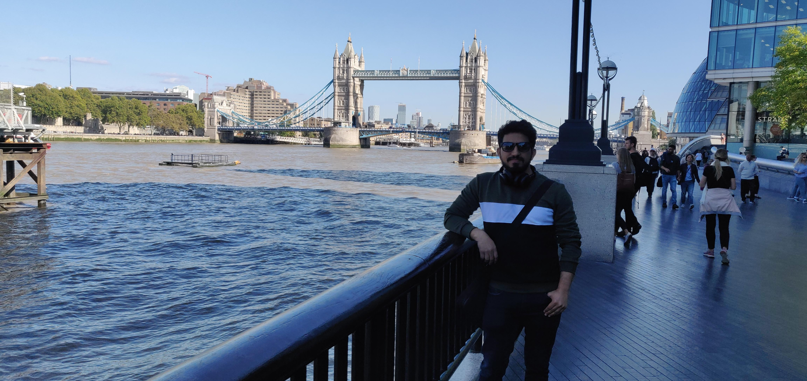

Activities in London
My short stay at London before pandemic hit the world and I had to come back to India.
UCL x DeepMind Lecture Series
Attended amazing lecture series on deep learning by Deep Mind in early 2020 at UCL London.
Machine Learning at Imperial College London
Attended few ml and nlp classes conducted by AI Core at Imperial College.
R-Conference by Max Kuhn
Got the chance to attend live conference by Max Kuhn the developer famous R packages like Caret & tidymodels.
Somewhere in London
London Eye
London Bridge
A Mandatory London Bridge Picture

Cricket at Canary Wharf
Watching cricket here during office breaks was fun.